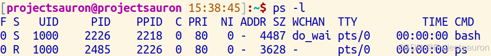
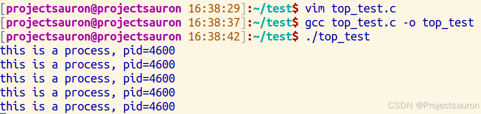
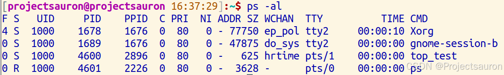
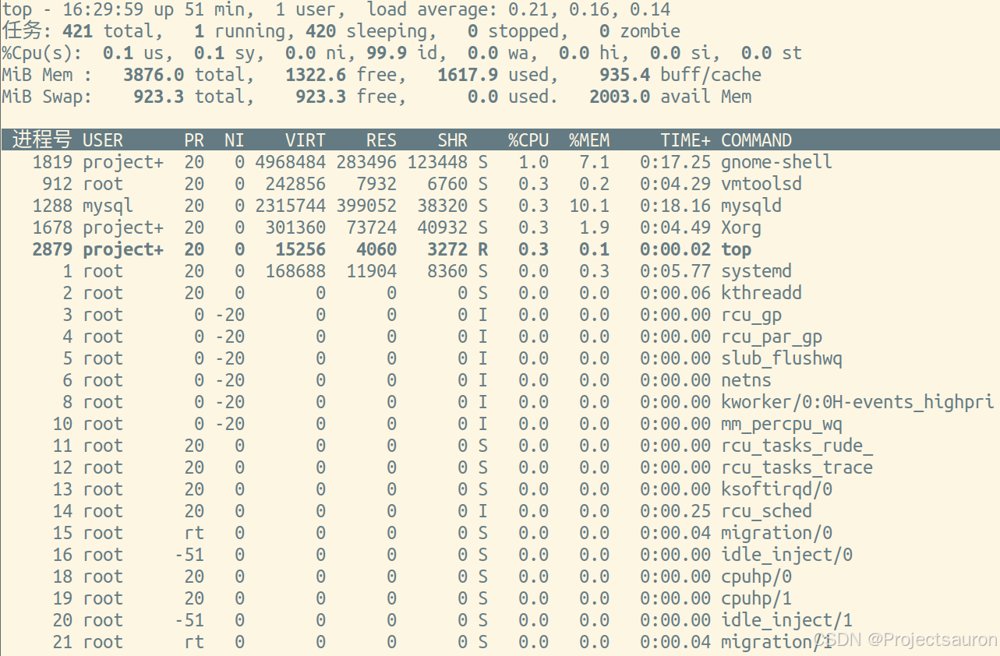
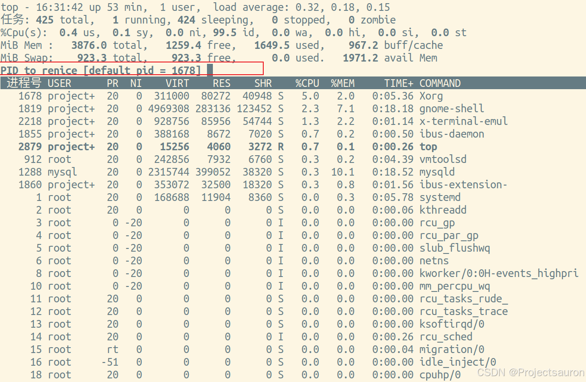
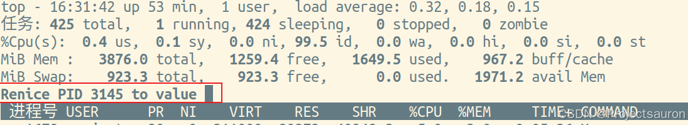
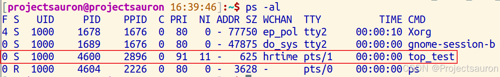
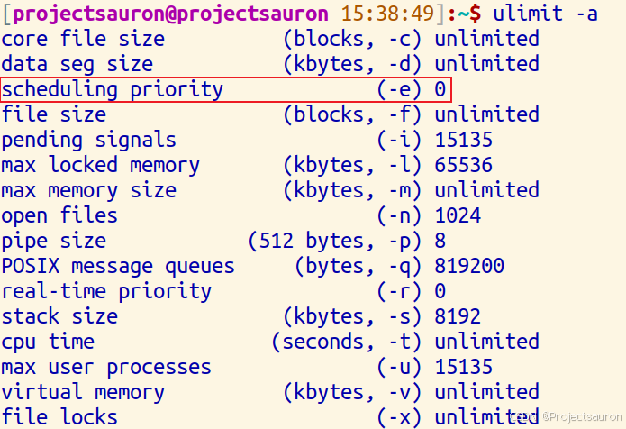

Linux 进程调度（三）之进程的优先级
@toc
一、概述
在 Linux 中，每个进程都有一个优先级。优先级决定了进程在系统资源分配中的先后顺序。Linux 中的进程优先级范围从 -20 到 +19，其中 -20 为最高优先级，+19 为最低优先级。
二、进程的优先级
1、基础概念
Linux 中的进程优先级分为静态优先级和动态优先级。
- 静态优先级：静态优先级是在创建进程时分配的，通常由管理员或程序员指定。静态优先级决定了进程的基本优先级，可以通过 nice 命令来设置，范围为 -20 到 +19。较低的数值表示较高的优先级。例如，如果给一个进程设置了较低的优先级值如 -10，那么这个进程将具有较高的优先级。
- 动态优先级：动态优先级是根据进程的行为和运行情况自动调整的。在 Linux 中，使用调度算法来动态调整进程的优先级。当一个进程使用 CPU 时间较长时，系统会降低它的优先级，让其他进程有更多的执行时间。而当一个进程处于等待 IO 等待状态时，系统会提高它的优先级，以便快速完成 IO 操作。
2、优先级的意义
因为 CPU 的空间归根结底还是寄存器， 而寄存器很小， 就注定了 CPU 的资源是有限的。 而进程的个数是多个的， 这就势必会导致进程之间的竞争关系。
操作系统为了保证进程之间的良性竞争， 他就会确认进程之间的优先级。如果我们的进程长时间得不到 CPU 资源， 该进程的代码长时间得不到推进， 就会出现饥饿问题。
进程的优先级本质上是 PCB（task_struct）内部属性中的一种属性，决定了进程获取某种资源的先后顺序。进程的 task_struct 在运行队列中排队，本质上就是确定获取 CPU 资源的先后顺序。
Linux 进程的优先级也是用来确定在多个进程同时运行时，哪个进程会获得更多的 CPU 时间片。
在 CPU 正常运行中，OS 给每一个CPU都维护一个运行队列，OS 把进程以”先进先出”的方式把进程的 PCB 放到运行队列中排队，等待 CPU 按照”时间片”的调度算法去调度进程（切换进程，来回剥离和恢复）。
不同的进程对 OS 本质上都是访问 OS 中的资源的访问。本质就是通过 OS 来实现对硬件资源的共享。但是硬件资源只有一套，进程有很多套，进程的共享不在同一时间上，所以造成了优先级。总之，进程所访问的 OS 的资源是有限的，OS 中进程大部分情况是大多数，所以需要优先级。
3、查看优先级
在 Linux 系统中：
ps -l命令用于查看当前终端进程的信息ps -al命令用于查看全部的进程信息

下面是几个重要字段的意义：
- UID : 代表执行者的身份
- PID : 代表这个进程的代号
- PPID ：代表这个进程是由哪个进程发展衍生而来的，亦即父进程的代号
- PRI ：代表这个进程可被执行的优先级，其值越小越早被执行
- NI ：代表这个进程的 nice 值
4、PRI 和 NI
PRI 标识进程的优先级（Priority），NI 表示进程的 Nice 值。这两个值越小，表示要求获得的 CPU 时间越多。
对于优先级为数字的进程来说，PRI 和 NI 的值总是对应的，PRI 的取值范围为 0-39，而 NI 的取值范围为 -20 - 19，PRI 的值总是等于 20 + NI。这样，当 Nice 值为负值的时候，那么该程序将会优先级值将变小，即其优先级会变高，则其越快被执行。所以，调整进程优先级，在Linux下，就是调整进程 Nice 值，而不是调整 PRI 的值。
Nice 在英文中是“和善“的意思，这里进程的 Nice 值，也表示进程的和善程度，Nice 值越高就越和善，越和善的进程，越不会与别的进程争抢 CPU 资源。在内核的实现中，Nice 值是内核考虑调度哪个普通进程的一个权重因素。Nice 值越高的进程，被分配到的总运行时间片就会越短;相反，Nice 值越低，就表示该进程希望能得到更多的 CPU 资源。
注意，进程的
Nice值不是进程的优先级，它们不是一个概念，但是进程Nice值会影响到进程的优先级变化。
5、修改优先级
先写一个 C 程序：
1 |
|


接下来在终端输入 top 命令，进入任务管理界面：

接下去按下 R/r 之后，就会跳出来下面这句话，这里的 renice 指的就是要重新修改进程，此时 shell 正在等待我们输入进程的 PID 值，那我们就可以输入上方的 4600：

然后，我们看到 shell 又在等待我们输入需要更改的 Nice 值：

比如输入 11，再用 ps 查看：

也就是说，Linux 系统支持用户调整优先级，但并不是让用户直接修改 PRI 值，而是修改 Nice 值。而 Nice 值 不是 优先级，而是优先级的修正数据。
所以真正的优先级应该是：PRI = PRI(old) + nice（old 指旧的优先级）
6、控制进程的优先级的系统调用
Linux 提供的修改和查看进程优先级的系统调用分别为：
1 | int setpriority(int which, id_t who, int prio); |
其中，which 和 who 参数联合指定要操作的进程或进程组，setpriority() 中的参数 prio 和 getpriority() 的返回值都是操作目标的 Nice 值。
因为 Nice 值可以是负数，所以，使用 getpriority() 系统调用之前需要先把 errno 显式设置为 0，如果返回值为负数，再联合 errno 区分是遇到错误，还是目标的 Nice 值本身就是负值。
7、调整优先级的限制
系统对进程的优先级调整，会施加一定的限制条件，防止被进程滥用。在 2.6.12 版本之后的 Linux 中，特权进程能够自由地修改任意进程的优先级，而非特权进程只能修改自身，或者同一个有效用户启动的其他进程，并且修改的幅度会受到系统限制的制约。
ulimit 命令的 -e 选项可以查看当前允许的调整范围，它的值表示优先级提高的上限若限制值为 LIMIT_N，则表示 Nice 值降低(优先级提高)时，能减少到的最小值为 20-LIMIT_N。

默认的限制值是 0，也就是说不允许非特权进程提高进程的优先级，而只能降低。当这个值大于 20(默认优先级)时，表示非特权进程能够把自身或相同有效用户的进程的 Nice 值调整为负值。
利用优先级调整的功能，开发者就可以根据不同服务的功能特性，合理分配它们的运行优先级。例如，在服务器开发中，经常会有一种内部审计的进程或线程，负责在后台执行一些数据完整性的检查，并在发现错误时报告一些错误信息，提醒开发或运营人员的注意。这种服务的运行不应该抢占对外提供服务的进程的运行资源。这时，就可以把它的运行优先级降到最低，比如，把 Nice 值设置为 19。
在上面 top 命令的输出中，也可以找到一个 Nice 值为 -20 的进程 kworker，这是 Linux 的内核工作队列的工作线程。